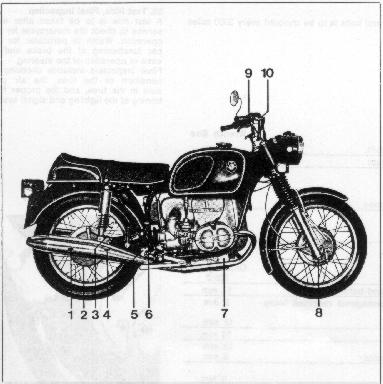
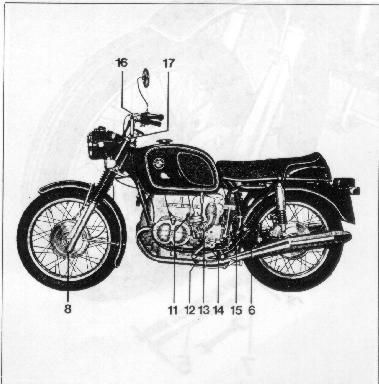

Diagram of Lubricating Points
Figure 53

- Filler hole, rear wheel drive
- Drain hole, rear wheel drive
- Filler hole, drive shaft housing
- Drain hole, drive shaft housing
- Grease fitting, foot brake linkage
- Grease fitting, right hand swing arm bearing
- Main flow oil filter
- Oil drain, telescopic fork
- Throttle assembly
- Brake lever pivot
- Oil dip stick, engine
- Oil drain, engine
- Filler hole, transmission
- Oil drain, transmission
- Grease fitting, clutch lever
- Clutch lever pivot
- Filler hole, telescopic fork
Figure 54
